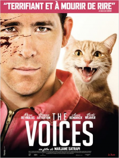

15 THE VOICES
- Critique
- Inclassable

Jerry mène une vie tout ce qu’il y a de plus ordinaire, puisqu’il habite à Milton, une petite ville américaine, travaille dans la société locale qui fabrique des baignoires et, célibataire, il essaie de séduire Fiona, la jeune anglaise qui travaille à la comptabilité. Mais il a aussi la particularité de parler avec son chat et son chien, surtout quand il ne prend pas ses médicaments…
Avec un ton très frais, des situations cocasses, un vrai mélange des genres, et un Ryan Reynolds retrouvé pour l’occasion, The Voices est un long métrage qui a vraiment son charme. Et ce qu’il dit en filigrane de la schizophrénie ne doit pas non plus être passé sous silence car c’est loin d’être inintéressant. Un film qui mérite qu’on s’y intéresse de près.
- Timothée
- 02.04.2015, 18:00